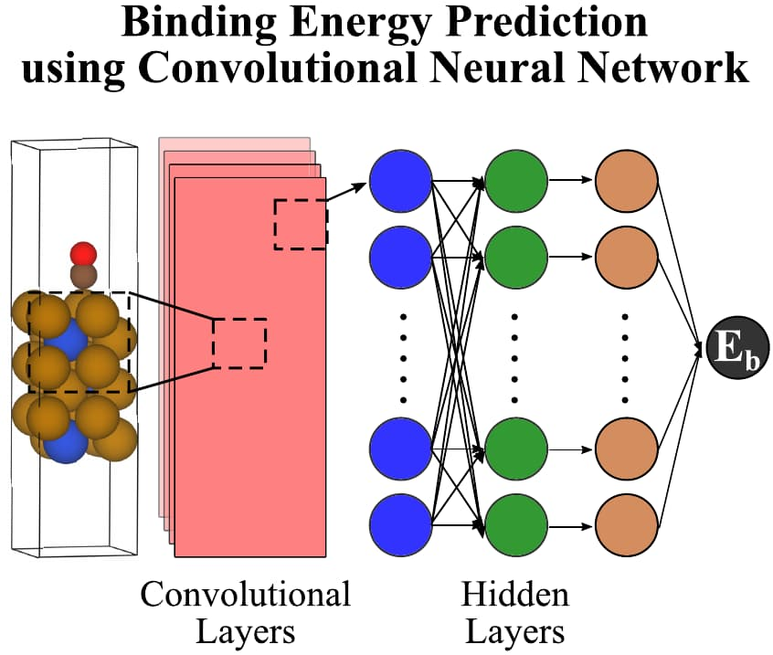
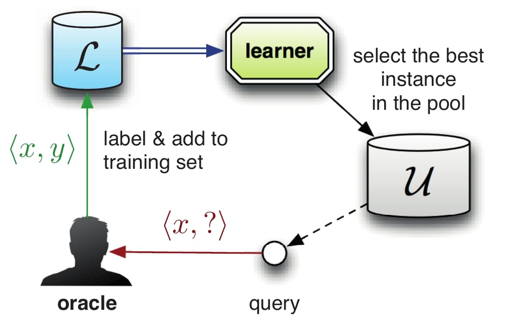

Machine Learning for Alloy Catalyst Discovery

My larger vision for alloy research is to use machine learning (ML) and microkinetic knowledge to discover highly active and selective electrocatalysts that are presently unknown. Of the potentially millions of materials (such as intermetallics,1 low- and high-entropy metal alloys,2 metal sulfides,3 and single atoms4) that might be active and selective for the nitrate reduction reaction, it is impossible to know ahead of time which of them are the most performant. Traditional evaluation of catalyst figures of merit (e.g., intuition-guided experiments or DFT calculations on a few catalysts at a time) are far too slow to screen a catalyst space of this size. However, ML promises to accelerate this process by providing ways to more cheaply evaluate a potential catalyst’s figures of merit.5,6
{kind=link}
Supervised ML learns correlations between sets of input and output training data to gain the ability to predict what output should result from a new input. My research focuses on training supervised ML models to act as surrogate DFT calculators, a scheme which can estimate binding energies approximately 103 times faster than analogous DFT calculation. In this scheme, a supervised ML model predicts a binding energy given only the geometry and atomic identities of an adsorbed slab. If trained on enough data, such a model could screen a large catalyst space in a more reasonable amount of time by rapidly predicting whether a binding energy falls within a window known to lead to high catalyst activity. This would greatly accelerate the search for a performant catalyst.
Several software packages implement some of the features useful for constructing these models. The GASpy software package7 automates the combinatorial calculation of potentially thousands of adsorption energies of common monodentate adsorbates across multiple facets on bielemental crystal structures. It uses the Atomic Simulation Environment8 to carry out atomic transformations and has been used to calculate CO and H binding energies on bimetallic alloys7 and, more recently, energies on Cu alloys for nitrate-to-ammonia reduction.9 The Atomate10 and Rocketsled11 packages automate many of the same tasks for workflows built on the Pymatgen12 library.
Several machine learning (ML) models have been developed to predict binding energy from the geometry and identity of the atoms of an adsorbed slab model. A number of featurization algorithms have emerged to encode this atomic geometry into translation- and rotation-invariant ML features, such as the Smooth Overlap of Atomic Positions (SOAP) representation13, the moment tensor potential (MTP) representation14, and the many-body tensor representation (MBTR)15. There is also a class of exciting models called crystal graph convolutional neural networks (CGCNNs), which function by encoding information about each atom and chemical bond in a topological graph representing a bulk crystal structure. This allows the convolutional and pooling layers to extract features relevant to that crystal16. This model was later adapted for surface catalysis by additionally encoding information about the local atomic geometry around each slab and adsorbate atom17 (see figure below) and further improved by including information about each atom’s electron configuration18.

Active learning is another important technology relevant to catalyst ML problems. Active learning is a strategy used when a training data set is small and obtaining more training data is costly. The high cost of DFT calculations means that most DFT-based catalysis data sets are small. Active learning can simultaneously refine the accuracy of a ML model and build a training data set by strategically selecting new training data to evaluate with DFT This approach helps minimize the number of expensive DFT calculations that must occur. The figure below illustrates pool-based sampling,19 one way of implementing active learning.

Active learning workflows obtain new data based on an acquisition function, which is an algorithmic approach for selecting data in a manner that constructs the model as cheaply as possible. One major acquisition function is the expected improvement acquisition function,20 which provides a good balance between improving model accuracy and exploring unstudied catalyst structures that may have desirable figures of merit.21
Our insights about which acquisition functions and featurization protocols create the most accurate and generalizable surrogate DFT models will enable many more researchers in catalysis to exploit the newest advances in machine learning and bring novel, effective catalysts to market more quickly. These results could also be applied to accelerate the discovery of materials for other fields beyond catalysis, such as superconductors, thermoelectrics, and photovoltaics.
-
M. Armbrüster, R. Schlögl, Y. Grin, Intermetallic compounds in heterogeneous catalysis—a quickly developing field, Sci. Technol. Adv. Mater. 15 (2014) 034803. https://doi.org/10.1088/1468-6996/15/3/034803. ↩︎
-
T.A.A. Batchelor, J.K. Pedersen, S.H. Winther, I.E. Castelli, K.W. Jacobsen, J. Rossmeisl, High-Entropy Alloys as a Discovery Platform for Electrocatalysis, Joule. 3 (2019) 834–845. https://doi.org/10.1016/j.joule.2018.12.015. ↩︎
-
A. Ivanovskaya, N. Singh, R.-F. Liu, H. Kreutzer, J. Baltrusaitis, T. Van Nguyen, H. Metiu, E. McFarland, Transition Metal Sulfide Hydrogen Evolution Catalysts for Hydrobromic Acid Electrolysis, Langmuir. 29 (2013) 480–492. https://doi.org/10.1021/la3032489. ↩︎
-
J. Shan, M. Li, L.F. Allard, S. Lee, M. Flytzani-Stephanopoulos, Mild oxidation of methane to methanol or acetic acid on supported isolated rhodium catalysts, Nature. 551 (2017) 605–608. https://doi.org/10.1038/nature24640. ↩︎
-
B.R. Goldsmith, J. Esterhuizen, J.-X. Liu, C.J. Bartel, C. Sutton, Machine learning for heterogeneous catalyst design and discovery, AIChE J. 64 (2018) 2311–2323. https://doi.org/10.1002/aic.16198. ↩︎
-
Z.W. Ulissi, A.J. Medford, T. Bligaard, J.K. Nørskov, To address surface reaction network complexity using scaling relations machine learning and DFT calculations, Nat. Commun. 8 (2017) 14621. https://doi.org/10.1038/ncomms14621. ↩︎
-
K. Tran, Z.W. Ulissi, Active learning across intermetallics to guide discovery of electrocatalysts for CO2 reduction and H2 evolution, Nat. Catal. 1 (2018) 696–703. https://doi.org/10.1038/s41929-018-0142-1. ↩︎
-
A.H. Larsen, J.J. Mortensen, J. Blomqvist, I.E. Castelli, R. Christensen, M. Du\lak, J. Friis, M.N. Groves, B. Hammer, C. Hargus, E.D. Hermes, P.C. Jennings, P.B. Jensen, J. Kermode, J.R. Kitchin, E.L. Kolsbjerg, J. Kubal, K. Kaasbjerg, S. Lysgaard, J.B. Maronsson, T. Maxson, T. Olsen, L. Pastewka, A. Peterson, C. Rostgaard, J. Schiøtz, O. Schütt, M. Strange, K.S. Thygesen, T. Vegge, L. Vilhelmsen, M. Walter, Z. Zeng, K.W. Jacobsen, The atomic simulation environment—a Python library for working with atoms, J. Phys. Condens. Matter. 29 (2017) 273002. https://doi.org/10.1088/1361-648X/aa680e. ↩︎
-
Y. Wang, A. Xu, Z. Wang, L. Huang, J. Li, F. Li, J. Wicks, M. Luo, D.-H. Nam, C.-S. Tan, Y. Ding, J. Wu, Y. Lum, C.-T. Dinh, D. Sinton, G. Zheng, E.H. Sargent, Enhanced nitrate-to-ammonia activity on copper-nickel alloys via tuning of intermediate adsorption, J. Am. Chem. Soc. (2020). https://doi.org/10.1021/jacs.9b13347. ↩︎
-
K. Mathew, J.H. Montoya, A. Faghaninia, S. Dwarakanath, M. Aykol, H. Tang, I. Chu, T. Smidt, B. Bocklund, M. Horton, J. Dagdelen, B. Wood, Z.-K. Liu, J. Neaton, S.P. Ong, K. Persson, A. Jain, Atomate: A high-level interface to generate, execute, and analyze computational materials science workflows, Comput. Mater. Sci. 139 (2017) 140–152. https://doi.org/10.1016/j.commatsci.2017.07.030. ↩︎
-
A. Dunn, J. Brenneck, A. Jain, Rocketsled: a software library for optimizing high-throughput computational searches, J. Phys. Mater. 2 (2019) 034002. https://doi.org/10.1088/2515-7639/ab0c3d. ↩︎
-
S.P. Ong, W.D. Richards, A. Jain, G. Hautier, M. Kocher, S. Cholia, D. Gunter, V.L. Chevrier, K.A. Persson, G. Ceder, Python Materials Genomics (pymatgen): A robust, open-source python library for materials analysis, Comput. Mater. Sci. 68 (2013) 314–319. https://doi.org/10.1016/j.commatsci.2012.10.028. ↩︎
-
A.P. Bartók, R. Kondor, G. Csányi, On representing chemical environments, Phys. Rev. B. 87 (2013) 184115. https://doi.org/10.1103/PhysRevB.87.184115. ↩︎
-
A.V. Shapeev, Moment Tensor Potentials: A Class of Systematically Improvable Interatomic Potentials, Multiscale Model. Simul. 14 (2016) 1153–1173. https://doi.org/10.1137/15M1054183. ↩︎
-
H. Huo, M. Rupp, Unified Representation of Molecules and Crystals for Machine Learning, (2018). http://arxiv.org/abs/1704.06439 (accessed September 2, 2020). ↩︎
-
T. Xie, J.C. Grossman, Crystal Graph Convolutional Neural Networks for an Accurate and Interpretable Prediction of Material Properties, Phys. Rev. Lett. 120 (2018) 145301. https://doi.org/10.1103/PhysRevLett.120.145301. ↩︎
-
S. Back, J. Yoon, N. Tian, W. Zhong, K. Tran, Z.W. Ulissi, Convolutional Neural Network of Atomic Surface Structures To Predict Binding Energies for High-Throughput Screening of Catalysts, J. Phys. Chem. Lett. 10 (2019) 4401–4408. https://doi.org/10.1021/acs.jpclett.9b01428. ↩︎
-
M. Karamad, R. Magar, Y. Shi, S. Siahrostami, I.D. Gates, A.B. Farimani, Orbital Graph Convolutional Neural Network for Material Property Prediction, (2020). http://arxiv.org/abs/2008.06415 (accessed September 7, 2020). ↩︎
-
B. Settles, Active Learning, Morgan & Claypool Publishers, Carnegie Mellon University, 2012. http://www.morganclaypool.com/doi/abs/10.2200/S00429ED1V01Y201207AIM018 (accessed May 13, 2019). ↩︎
-
H.J. Kushner, A New Method of Locating the Maximum Point of an Arbitrary Multipeak Curve in the Presence of Noise, J. Basic Eng. 86 (1964) 97–106. https://doi.org/10.1115/1.3653121. ↩︎
-
T. Lookman, P.V. Balachandran, D. Xue, R. Yuan, Active learning in materials science with emphasis on adaptive sampling using uncertainties for targeted design, Npj Comput. Mater. 5 (2019). https://doi.org/10.1038/s41524-019-0153-8. ↩︎
Samuel D. Young
Graduate Student Researcher, Graduate Student Instructor
My research interests include computational catalysis, nitrogen chemistry, and machine learning for environmental science.